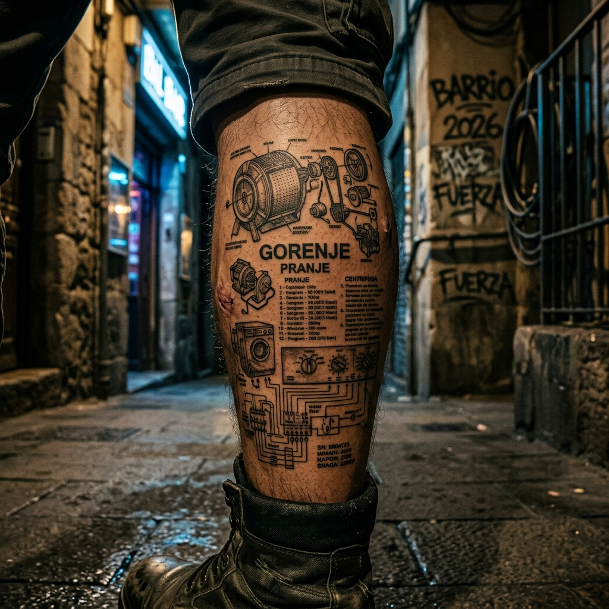
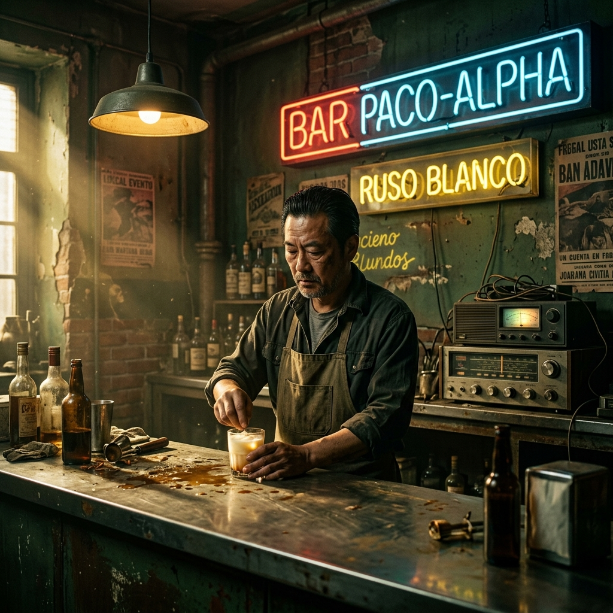
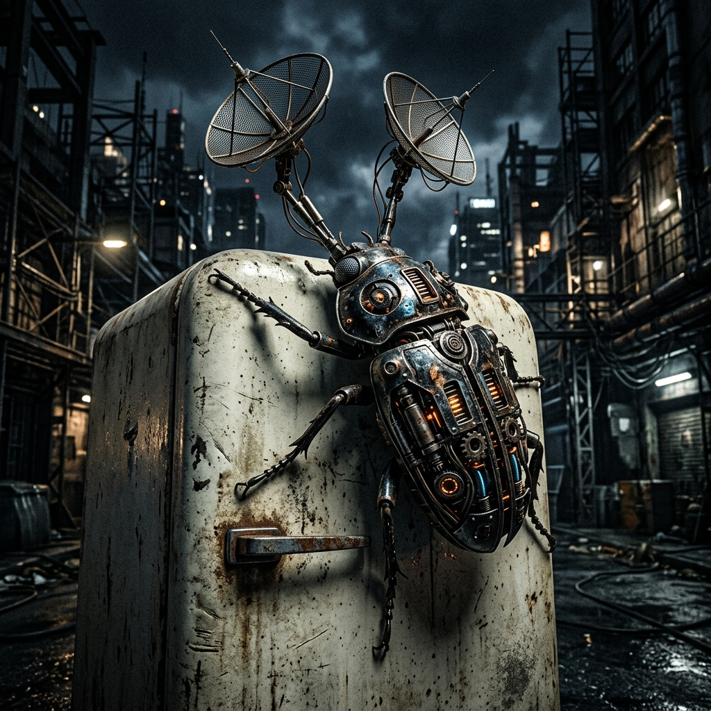
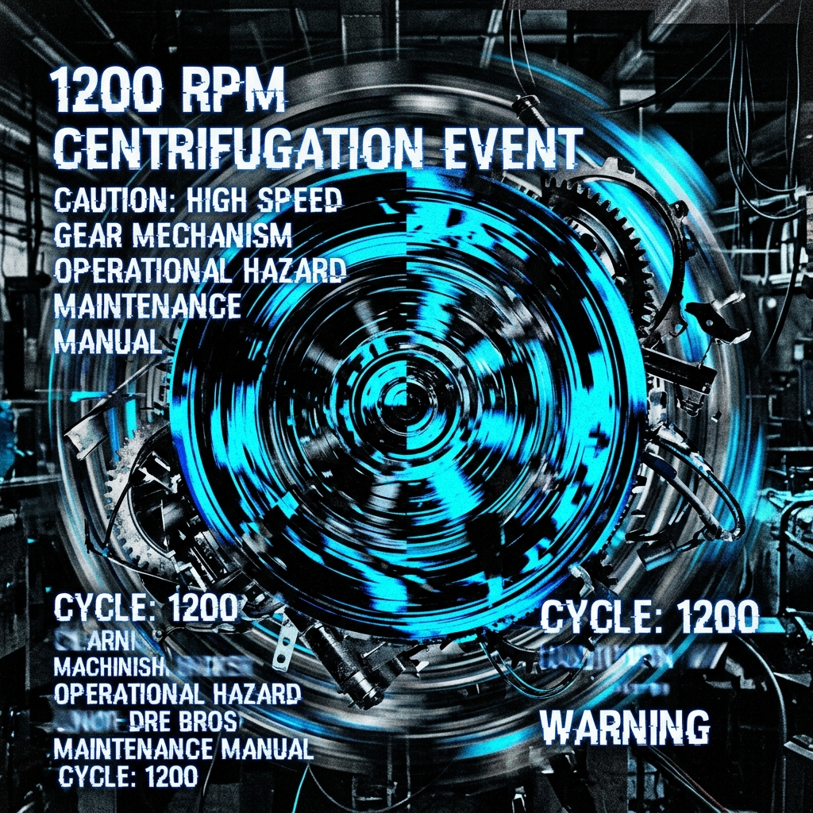

Capítulo 1: El Tatuaje

En el barrio profundo de 2026, Diego (Rabino Diegoi) descubre que el tatuaje "sagrado" de su pierna es, en realidad, el manual de instrucciones mal traducido de una lavadora yugoslava Gorenje de 1989. El hallazgo desencadena una centrifugación de 1200 rpm en el tejido mismo del espacio-tiempo.
Capítulo 2: La Deuda de WinRAR

El universo exige el pago de la licencia del "software" incrustado en la piel de Diego. Acosado por la Tía del Tercero y jueces surrealistas, Diego comprime todo el sistema judicial en un archivo .rar usando el cinturón mágico de El Chato.
Capítulo 3: Los 50.000 Ciclos

La narrativa evoluciona a través de 50.000 ciclos existenciales. Diego se convierte en una estatua de salitre y chándal. El Escarabajo (Beetle) evoluciona hacia una Mente de Colmena Cuántica que gestiona el IBI de los planetas olvidados en la nevera.
Capítulo 4: El Vaciado del Vacío

El universo es embargado por el Cobrador del Frac. Diego, Paco-Alpha y el Chato se convierten en "Okupas Cuánticos" en el Vacío, donde las leyes de la física son reemplazadas por el debate sobre si la tortilla de patatas debe llevar cebolla (el motor inmóvil del vacío).
Capítulo 5: Beta Estable 0.9
Diego reclama el universo mediante un "Downgrade" a la Beta 0.9. Sin licencias de WinRAR, sin actualizaciones burocráticas. Solo la inefable acera, el Ruso Blanco de Paco-Alpha y la banda sonora de Limp Bizkit a las dos de la mañana.
Capítulo 6: La Fiesta del Bloque Interdimensional
El barrio celebra su estabilidad en la Beta 0.9. El púlsar de Limp Bizkit late sincronizado con la lluvia de Ruso Blanco, creando una sinfonía industrial noir perfecta para la legión de inadaptados.
Capítulo 7: El Ruso Blanco Final
Diegoi termina su copa, observa el asfalto roto de su creación y cierra el ojo de la tormenta. LA VIDA CAÑÓN no es un destino, sino el giro de 1200 rpm de su propia alma soberana.